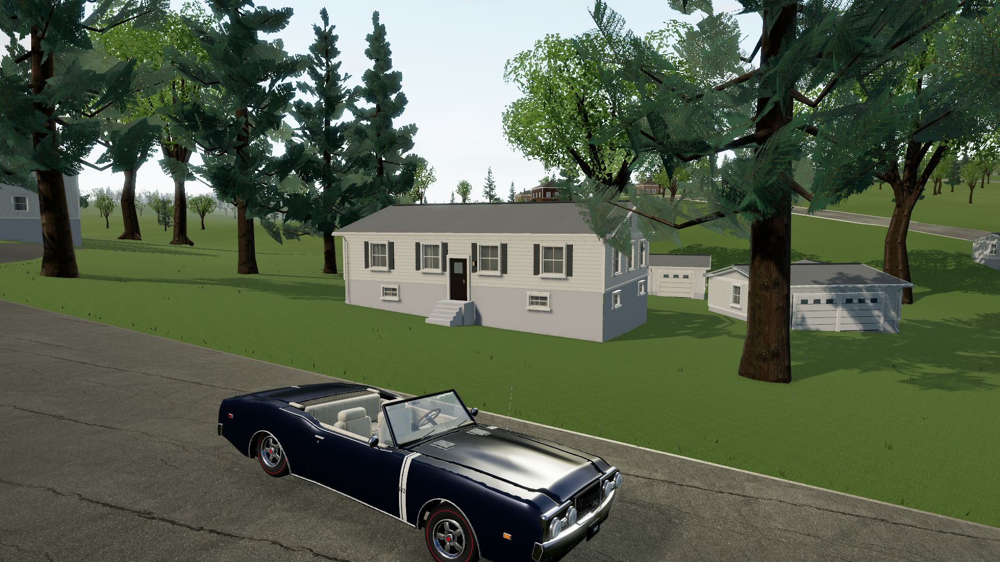
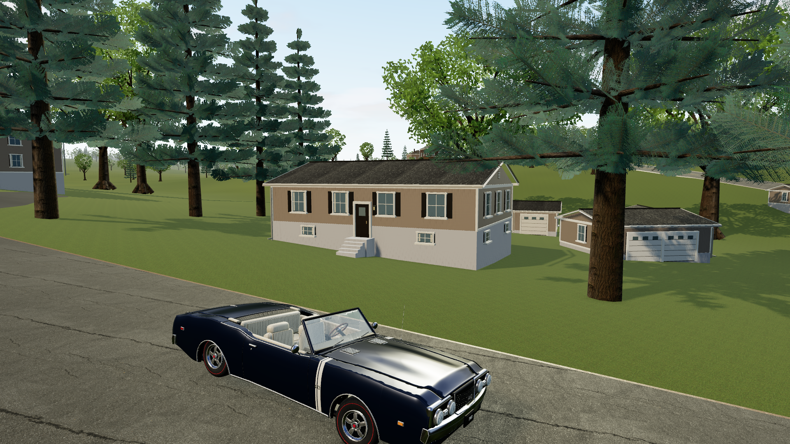

<!doctype html>
<html lang="en">
<meta charset="utf-8">
<meta name="viewport" content="width=device-width, initial-scale=1">
<title>Beverly Drive — detail comparison</title>
<style>
*{box-sizing:border-box}body{margin:0;background:#121b1b;color:#edf0e4;font:15px/1.6 system-ui,sans-serif}main{max-width:1500px;margin:auto;padding:34px 32px 28px}header{display:flex;align-items:end;justify-content:space-between;gap:24px;margin-bottom:24px}.eyebrow{color:#b7c4a2;font-size:11px;text-transform:uppercase;letter-spacing:.24em}h1{font-size:clamp(26px,3.2vw,43px);line-height:1.15;margin:8px 0 0;font-weight:550;letter-spacing:-.035em}label{display:block;font-size:12px;color:#b9c7c2}select{margin-top:6px;padding:11px 40px 11px 13px;background:#23312f;color:#f5f3e8;border:1px solid #586c62;border-radius:5px;font:inherit}.compare{position:relative;aspect-ratio:16/9;overflow:hidden;background:#283d31;--reveal:50%;border-radius:8px;box-shadow:0 18px 50px #0004}.compare img{position:absolute;width:100%;height:100%;object-fit:cover}.before{clip-path:inset(0 calc(100% - var(--reveal)) 0 0)}.line{position:absolute;left:var(--reveal);top:0;bottom:0;width:2px;background:#f4ecd6;pointer-events:none}.line:after{content:'↔';display:grid;place-content:center;position:absolute;top:50%;left:0;transform:translate(-50%,-50%);width:44px;height:44px;background:#f4ecd6;color:#1a2924;border-radius:50%;font-size:23px;box-shadow:0 3px 20px #0005}.tag{position:absolute;top:16px;padding:6px 11px;font-size:11px;letter-spacing:.16em;text-transform:uppercase;background:#14241ecd;border:1px solid #ffffff28;pointer-events:none}.tag.old{left:16px}.tag.new{right:16px}.slider{position:absolute;inset:0;width:100%;height:100%;margin:0;opacity:0;cursor:ew-resize}.compare:focus-within{outline:3px solid #b0cc8e;outline-offset:4px}footer{display:flex;justify-content:space-between;gap:30px;color:#b8c4bd;font-size:13px;margin-top:20px}footer p{margin:0;max-width:770px}a{color:#d2dfa9;text-underline-offset:4px}@media(max-width:650px){main{padding:22px 16px}header,footer{display:block}header label{margin-top:18px}.tag{top:8px;font-size:8px}.line:after{width:32px;height:32px}footer p{margin-bottom:14px}}
</style>
<main>
<header><div><div class="eyebrow">Blue County · Warwick, New York</div><h1>A closer look at Beverly Drive.</h1></div><label>Compare a view<select id="view"><option value="home-house">Home and the 442</option><option value="west-35">35 Beverly Drive</option><option value="north-22">22 Beverly Drive</option><option value="home">Driving from Home</option></select></label></header>
<div class="compare" id="compare">


<span class="tag old">Previous pass</span><span class="tag new">New detail pass</span><div class="line"></div>
<input class="slider" id="slider" type="range" min="0" max="100" value="50" aria-label="Reveal the previous view on the left; drag or use arrow keys">
</div>
<footer><p>Drag to compare. The same reference layout, with fuller trees, recessed windows, finer surfaces and revised light. Added construction detail is procedural; unverified house colors remain provisional.</p><a href="http://127.0.0.1:5180/?revision=beverly-detail">Drive the neighborhood ↗</a></footer>
</main>
<script>
const slider=document.getElementById('slider'),compare=document.getElementById('compare');
slider.addEventListener('input',()=>compare.style.setProperty('--reveal',slider.value+'%'));
document.getElementById('view').addEventListener('change',event=>{
  const view=event.target.value;
  document.getElementById('before').src='beverly-'+view+'.png';
  document.getElementById('after').src='beverly-detail-'+view+'.png';
});
</script>
</html>
